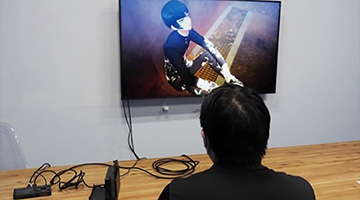
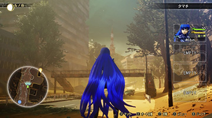
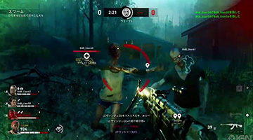
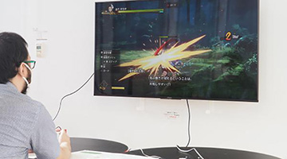
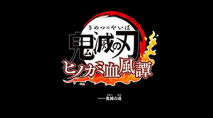
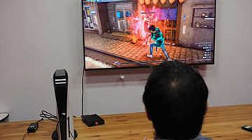

2021/9/17
【ロストジャッジメント】先行体験プレイ 未公開エリア横浜 一足先に潜入してきたぞ！流スタイルも体験【PS5】ジャッジアイズ続編情報公開映像
記事紹介

2021/9/30
ゲーム序盤で戦闘や＜写せ身合体＞などを体験！『真・女神転生V』先行体験プレイレポート2021/9/30
「真・女神転生V」先行プレイレポート！ シリーズお馴染み「プレスターンバトル」に新要素が追加2021/9/30
プレスターンバトルの殺るか殺られるかの緊迫感は健在！『真・女神転生V』TGS2021先行試遊レポート2021/9/30
快適な操作感は、歴代シリーズ随一！神秘的な美少年なナホビノと魔界ダアトをめぐる「真・女神転生Ⅴ」先行プレイレビュー【TGS2021】

2021/9/30
［TGS 2021］「真・女神転生V」先行プレイレポート。崩壊した東京の描写と充実した探索要素が魅力

2021/9/30
期待のゾンビシューター『Back 4 Blood』の対戦モードをプレイ 生き残りvs殲滅の戦いにバトロワのようなエリア制限が加わった「令和のL4D」2021/9/29
炭治郎たちの迫力あるアクションをシンプルな操作で楽しめる「鬼滅の刃 ヒノカミ血風譚」先行プレイレポート2021/9/29
『鬼滅の刃 ヒノカミ血風譚』プレイレビュー！ 爽快感と共闘感を味わえる鬼殺対戦アクションの魅力に迫る！

2021/9/29
鬼滅ファン必見！ 『鬼滅の刃 ヒノカミ血風譚』は、簡単操作で原作さながらの派手な剣戟を再現できるアクションゲームだ！

2021/9/29
“匂いの探知”や“隙の糸”も再現！「鬼滅の刃 ヒノカミ血風譚」TGS2021先行プレイレポート2021/9/29
『鬼滅の刃 ヒノカミ血風譚』先行体験会レポートをお届け！2021/9/29
『鬼滅の刃 ヒノカミ血風譚』試遊レポート テレビアニメ版から劇場版までのエピソードを追体験可能な『鬼滅の刃』初の家庭用ゲームタイトル

2021/9/17
「LOST JUDGMENT：裁かれざる記憶」先行体験レポート、新要素満載で最後まで遊びたくなる期待作だ
2021/9/17
『LOST JUDGMENT』八神が部活顧問に！ ダンス、ロボコン、暴走族…多彩なミニゲーム満載「ユースドラマ」を先行プレイレポ